Выбор рациона и конфигуратор меню
Разделила выбор рациона и его настройку на последовательные этапы. Для каждого рациона спроектировала отдельный конструктор с блюдами, датами доставки и прозрачным расчётом стоимости.
До
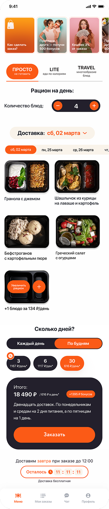
После

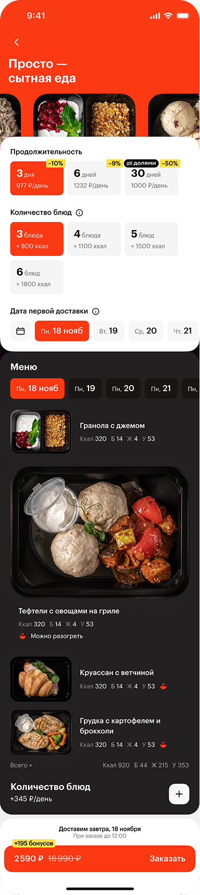
Оформление заказа и настройка доставки
Перестроила checkout в последовательную форму со сворачиваемыми блоками. После заполнения каждый блок превращается в компактное summary с ключевой информацией.
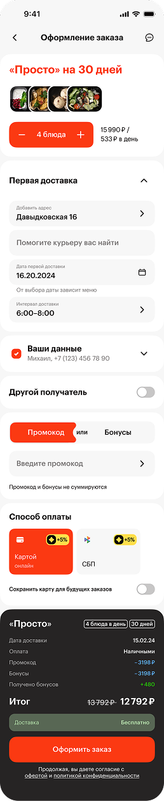
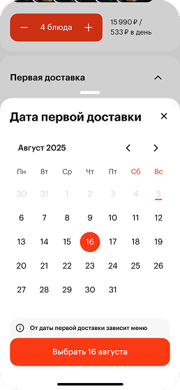
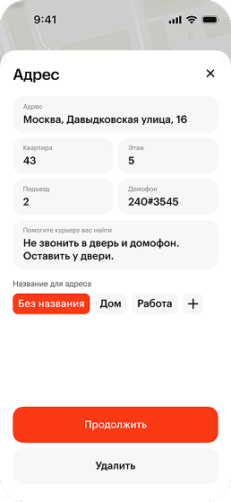
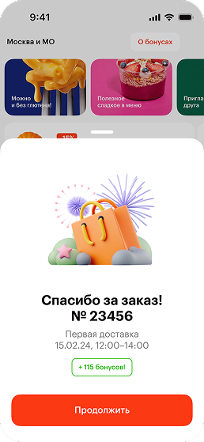
Управление графиком доставок
Объединила перенос дат, изменение адреса и управление доставками в одном сценарии вместо разрозненных экранов.
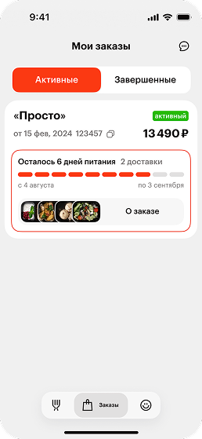
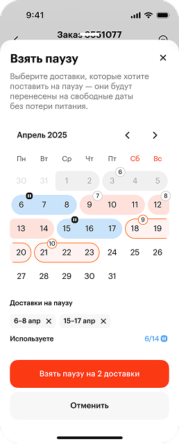
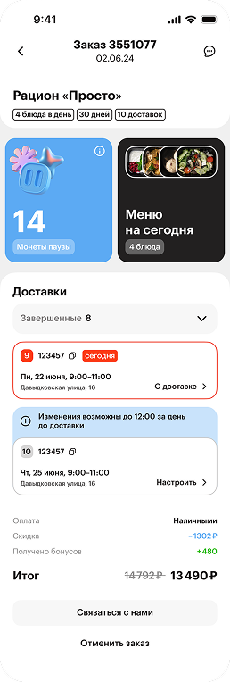
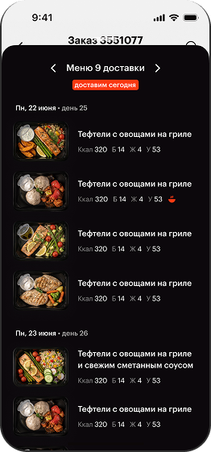
Профиль и система лояльности
Переработала профиль, чтобы баланс бонусов и условия программы были заметнее в ключевых сценариях.
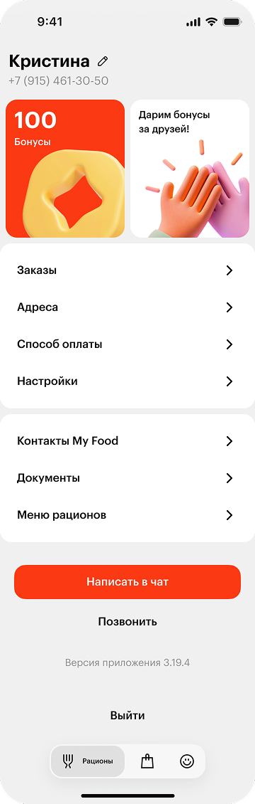
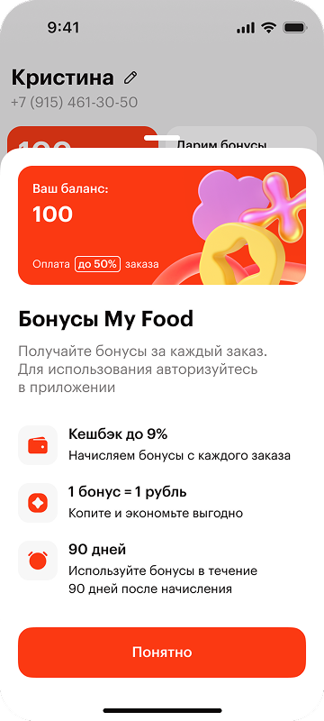
Визуальный язык и графика
Развивала визуальный язык и наладила генерацию 3D-иллюстраций в Recraft в стилистике бренда.
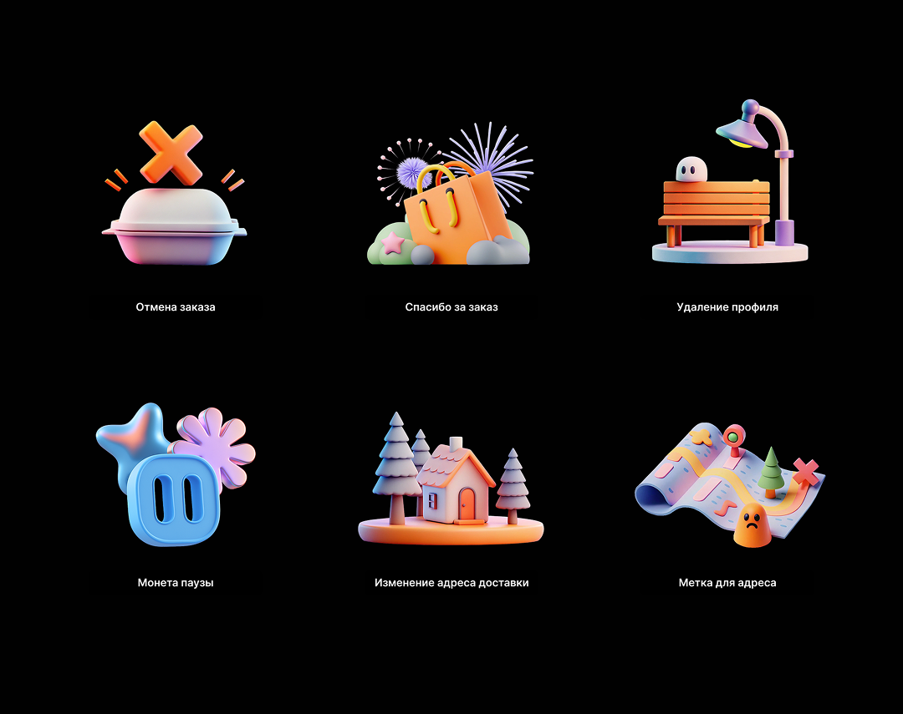